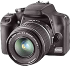
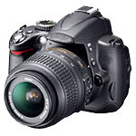
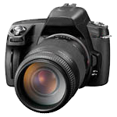

| 100A | 200B | 300C | |
|---|---|---|---|
|  |  |  | |
| Produttore | Alpha | Beta | Gamma |
| Tipologia | DSLR Entry Level | DSLR Amatoriale | DSLR |
| Sul mercato da | Giugno 2018 | Maggio 2018 | Giugno 2018 |
| Formati immagine | JPEG, RAW | JPEG, RAW | JPEG, RAW |
| Formati video | n.d | MJPEG | n.d |
| Microfono interno | n.d | Mono | n.d |
| Alimentazione | Batteria LP-E5 | Batteria EN-EL9a | Batteria NP-FH50 |
| Peso pronto all'uso | 502 | 590 | 456 |